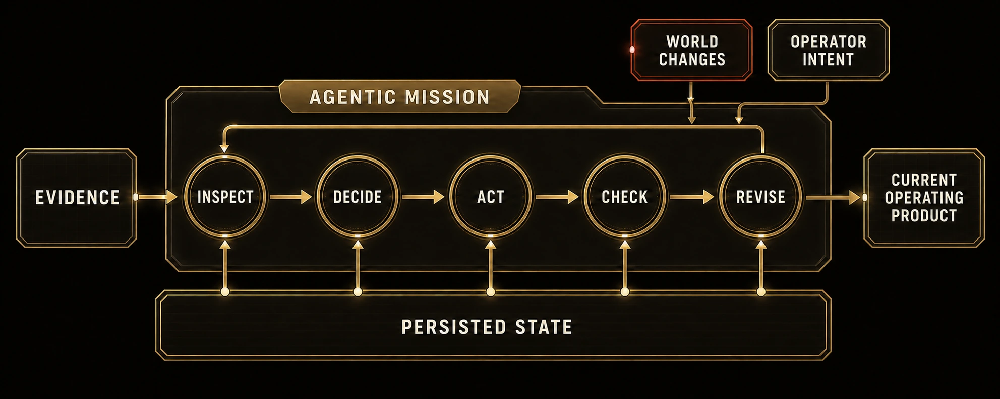

Thursday AM · P6 · AI Harness Bootcamp
The Watch Officer — Clear the Overnight Watch
Four mixed overnight files are waiting. One PowerShell command launches native full Goose, which turns their evidence into a polished command-center dashboard and keeps its working state behind the page. You open the dashboard, introduce a second wave, state one operating intent, and watch Goose revise the same command center with a visible account of what changed.
Start here
This exercise takes one crowded overnight watch from unread reports to a dashboard a morning operator can use. Plan for 45–60 minutes. You launch Goose twice, but you work with one continuing command center in runs\current.
The sequence is short: run Wave 1, read the dashboard, state one intent after the situation changes, run the update, and compare the before-and-after view on the revised page. Goose owns the work between each launch and the checked finish.
What you will leave with
runs\current\command_center.html, the polished page you useruns\current\mission_state.json, the backstage state Goose maintains- One provisional Wave 1 allocation and one operator intent applied in Wave 2
- A visible What Changed account with NEW, CHANGED, CANCELLED, and UNCHANGED work
- A dated P6 entry in your Operator Log and 60-day Transfer seed
Before you start
- The course repository is at
Documents\HarnessBootcamp\AI_Harness_Bootcamp. - Goose works from pre-work. The launcher checks the installed command before it starts the mission.
$env:HB_XAI_MODELcontains the course xAI model name.- Keep one PowerShell window open for both waves.
Lead operate-along
The lead runs the same watch on screen. Run your own copy. Let Goose finish without extra prompts, then judge what an operator can see in the command center.
How Goose works this watch
One mission drives the work; the current state decides what Goose does next.

One launch gives Goose the full job
You do not issue a chain of prompts. The launcher keeps your full installed Goose profile and adds the built-in Developer toolkit for this mission. Goose reads the reports, decides how to organize the watch, builds the dashboard, checks the result, repairs what failed, and stops when the work holds.
goal → inspect → choose → act → check → revise → finish
The dashboard is frontstage; mission state is backstage
command_center.html is the operator product. It should make priorities, actions, evidence, and resource choices readable in one page. mission_state.json is the machine-readable memory behind it, which lets Goose revise the same watch instead of starting another summary.
Wave 1 permits a provisional choice
The first reports leave one mobile power unit between two urgent needs. Goose must make and explain a provisional allocation so the morning product is useful. The agent is allowed to move the work forward; its choice remains visible for you to judge.
Wave 2 returns intent to the operator
New evidence changes the situation: Route Bravo reopens to light vehicles only; Bridge Foxtrot needs ambulance clearance by 07:10 for a 07:20 arrival; Cold Store 7 reports its fixed generator online at 06:44; and bridge message EV-018 repeats EV-017 but must not create duplicate work. You state the operating intent. Goose decides how to carry it through the revised command center.
PASS is the stop signal
The final P6 VERIFY PASS line tells you the mission check cleared. Your work is to read the command center and decide whether its priorities and explanation are usable.
P7 uses a different machine
This afternoon, P7 sends every row through a fixed line that you design in advance. P6 is state-driven: Goose chooses the next action from the changing watch. P7 is path-driven: each row follows the same stations.
Save the three-line transfer
After the operational finish, take five minutes to preserve the lesson without reopening the mechanics.
In Codex, paste this complete closeout prompt:
Close P6 from the saved artifacts without asking me to copy values or fill fields.
Read:
- mission_flesh/p6/runs/current/command_center.html
- mission_flesh/p6/runs/current/mission_state.json
- operator/OPERATOR_LOG.md
- operator/TRANSFER_30_60_90.md
Run the P6 verifier yourself:
node mission_flesh/p6/scripts/verify.mjs --run-root mission_flesh/p6/runs/current --wave 2
If verification does not pass, stop without editing and report the exact findings.
If it passes, use its final PASS line.
Use today's local date automatically.
Update only "P6 — Watch officer" in operator/OPERATOR_LOG.md and every row
under "From P6 — Agentic mission" in operator/TRANSFER_30_60_90.md.
Use the saved artifacts to record what Goose coordinated and how the dashboard
changed after the operator intent. Select the most concrete changing queue
already named in the operator files. If none is named, use "incoming operational
requests that must be reprioritized as facts change" as a provisional first trial.
Leave no blank fields, bracketed tokens, TODO, or TBD markers. Preserve all
unrelated text and show the exact edits.Before you move on
Confirm the current command center opens, the Wave 1 provisional allocation remains visible, your intent appears exactly, and What Changed explains the revision. Then save the short transfer above.
If you get stuck
- The readiness check stops. Keep the exact message. Correct the named setup problem, then paste the complete Wave 1 command again.
- The run stops early. Keep the console message. Paste the same complete command again; do not rewrite the prepared mission or source reports.
- The dashboard does not open. Paste the complete
Start-Processcommand from Stage 02. If the file is missing, keep the console message and ask for help. - You need a clean Wave 1 attempt. Paste the complete Wave 1 command again. The launcher rebuilds
runs\current. - Wave 2 rejects the intent. Paste either complete Wave 2 command from Stage 04 again.